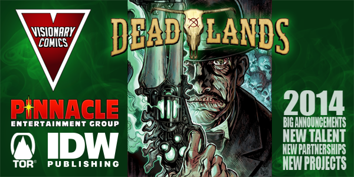

Pinnacle Entertainment Group Announces Transmedia Partnership For Deadlands RPG, Comics, And Novels
Posted September 19, 2014 by Christopher Helton
Comments
By Christopher Helton
Pinnacle Entertainment Group and Visionary Comics have announced a transmedia partnership that will bring Pinnacle's Deadlands tabletop roleplaying game setting to comics and prose novels.
Dead Man's Hands, the first release out of this partnership, will be a trade paperback of Deadlands one shots previously published by Image Comics and Visionary Comics and featuring the work of David Gallaher, Steve Ellis, Jimmy Palmiotti, Justin Gray, Lee Moder, Ron Marz, Bart Sears, Jeff Mariotte, Brook Turner, and Michael Atiyeh. Dead Man's Hands will be published in conjunction with IDW Publishing in March of 2015.
Visionary Comics will also be working with Tor Books to publish Deadlands-related prose fiction from New York Times bestselling authors Jonathan Maberry, Seanan McGuire, and Jeff Mariotte. There are, as yet, no release dates for these novels.
Unrelated to this deal, the Deadlands setting is also still in development as a television show, despite the originally announced deal with Microsoft falling to the wayside.